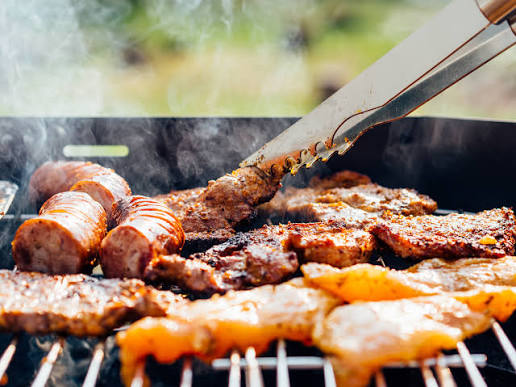

Home
How to cook Thit Rang perfectly

Description
A classic Asian dish that not just very easy to make, but the flavor is phenomenal.Today, we're going to show you how to master it.
Ingredients
- 500g of porkchop
- fish sauce
- Sugar
- Chillies
- A peticular skill: Wok tossing(optional)
Steps
- Turn on high heat
- Start adding the porkchops in
- Make sure the eggs not cooking too fast and tossing them regularly at medium heat
- When they turn golden, start adding fish sauce and chillies and sugar
- Continue tossing until it's ready
- Now present on a dish and enjoy!